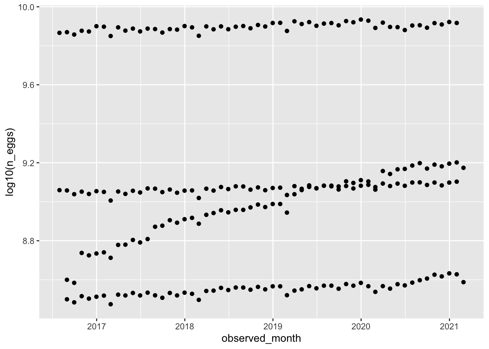
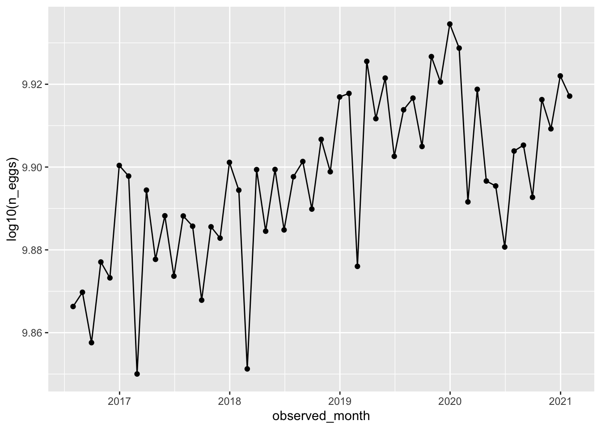
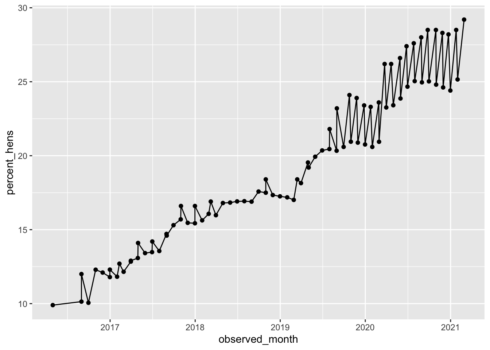

<!DOCTYPE html>
<html xmlns="http://www.w3.org/1999/xhtml" lang="en" xml:lang="en"><head>

<meta charset="utf-8">
<meta name="generator" content="quarto-1.2.313">

<meta name="viewport" content="width=device-width, initial-scale=1.0, user-scalable=yes">

<meta name="author" content="Leah Lariscy">

<title>My Data Analysis Portfolio - Tidy Tuesday Exercise</title>
<style>
code{white-space: pre-wrap;}
span.smallcaps{font-variant: small-caps;}
div.columns{display: flex; gap: min(4vw, 1.5em);}
div.column{flex: auto; overflow-x: auto;}
div.hanging-indent{margin-left: 1.5em; text-indent: -1.5em;}
ul.task-list{list-style: none;}
ul.task-list li input[type="checkbox"] {
  width: 0.8em;
  margin: 0 0.8em 0.2em -1.6em;
  vertical-align: middle;
}
pre > code.sourceCode { white-space: pre; position: relative; }
pre > code.sourceCode > span { display: inline-block; line-height: 1.25; }
pre > code.sourceCode > span:empty { height: 1.2em; }
.sourceCode { overflow: visible; }
code.sourceCode > span { color: inherit; text-decoration: inherit; }
div.sourceCode { margin: 1em 0; }
pre.sourceCode { margin: 0; }
@media screen {
div.sourceCode { overflow: auto; }
}
@media print {
pre > code.sourceCode { white-space: pre-wrap; }
pre > code.sourceCode > span { text-indent: -5em; padding-left: 5em; }
}
pre.numberSource code
  { counter-reset: source-line 0; }
pre.numberSource code > span
  { position: relative; left: -4em; counter-increment: source-line; }
pre.numberSource code > span > a:first-child::before
  { content: counter(source-line);
    position: relative; left: -1em; text-align: right; vertical-align: baseline;
    border: none; display: inline-block;
    -webkit-touch-callout: none; -webkit-user-select: none;
    -khtml-user-select: none; -moz-user-select: none;
    -ms-user-select: none; user-select: none;
    padding: 0 4px; width: 4em;
    color: #aaaaaa;
  }
pre.numberSource { margin-left: 3em; border-left: 1px solid #aaaaaa;  padding-left: 4px; }
div.sourceCode
  {   }
@media screen {
pre > code.sourceCode > span > a:first-child::before { text-decoration: underline; }
}
code span.al { color: #ff0000; font-weight: bold; } /* Alert */
code span.an { color: #60a0b0; font-weight: bold; font-style: italic; } /* Annotation */
code span.at { color: #7d9029; } /* Attribute */
code span.bn { color: #40a070; } /* BaseN */
code span.bu { color: #008000; } /* BuiltIn */
code span.cf { color: #007020; font-weight: bold; } /* ControlFlow */
code span.ch { color: #4070a0; } /* Char */
code span.cn { color: #880000; } /* Constant */
code span.co { color: #60a0b0; font-style: italic; } /* Comment */
code span.cv { color: #60a0b0; font-weight: bold; font-style: italic; } /* CommentVar */
code span.do { color: #ba2121; font-style: italic; } /* Documentation */
code span.dt { color: #902000; } /* DataType */
code span.dv { color: #40a070; } /* DecVal */
code span.er { color: #ff0000; font-weight: bold; } /* Error */
code span.ex { } /* Extension */
code span.fl { color: #40a070; } /* Float */
code span.fu { color: #06287e; } /* Function */
code span.im { color: #008000; font-weight: bold; } /* Import */
code span.in { color: #60a0b0; font-weight: bold; font-style: italic; } /* Information */
code span.kw { color: #007020; font-weight: bold; } /* Keyword */
code span.op { color: #666666; } /* Operator */
code span.ot { color: #007020; } /* Other */
code span.pp { color: #bc7a00; } /* Preprocessor */
code span.sc { color: #4070a0; } /* SpecialChar */
code span.ss { color: #bb6688; } /* SpecialString */
code span.st { color: #4070a0; } /* String */
code span.va { color: #19177c; } /* Variable */
code span.vs { color: #4070a0; } /* VerbatimString */
code span.wa { color: #60a0b0; font-weight: bold; font-style: italic; } /* Warning */
</style>


<script src="site_libs/quarto-nav/quarto-nav.js"></script>
<script src="site_libs/quarto-nav/headroom.min.js"></script>
<script src="site_libs/clipboard/clipboard.min.js"></script>
<script src="site_libs/quarto-search/autocomplete.umd.js"></script>
<script src="site_libs/quarto-search/fuse.min.js"></script>
<script src="site_libs/quarto-search/quarto-search.js"></script>
<meta name="quarto:offset" content="./">
<script src="site_libs/quarto-html/quarto.js"></script>
<script src="site_libs/quarto-html/popper.min.js"></script>
<script src="site_libs/quarto-html/tippy.umd.min.js"></script>
<script src="site_libs/quarto-html/anchor.min.js"></script>
<link href="site_libs/quarto-html/tippy.css" rel="stylesheet">
<link href="site_libs/quarto-html/quarto-syntax-highlighting-dark.css" rel="stylesheet" id="quarto-text-highlighting-styles">
<script src="site_libs/bootstrap/bootstrap.min.js"></script>
<link href="site_libs/bootstrap/bootstrap-icons.css" rel="stylesheet">
<link href="site_libs/bootstrap/bootstrap.min.css" rel="stylesheet" id="quarto-bootstrap" data-mode="dark">
<script id="quarto-search-options" type="application/json">{
  "location": "navbar",
  "copy-button": false,
  "collapse-after": 3,
  "panel-placement": "end",
  "type": "overlay",
  "limit": 20,
  "language": {
    "search-no-results-text": "No results",
    "search-matching-documents-text": "matching documents",
    "search-copy-link-title": "Copy link to search",
    "search-hide-matches-text": "Hide additional matches",
    "search-more-match-text": "more match in this document",
    "search-more-matches-text": "more matches in this document",
    "search-clear-button-title": "Clear",
    "search-detached-cancel-button-title": "Cancel",
    "search-submit-button-title": "Submit"
  }
}</script>


<link rel="stylesheet" href="styles.css">
</head>

<body class="nav-fixed">

<div id="quarto-search-results"></div>
  <header id="quarto-header" class="headroom fixed-top">
    <nav class="navbar navbar-expand-lg navbar-dark ">
      <div class="navbar-container container-fluid">
      <div class="navbar-brand-container">
    <a class="navbar-brand" href="./index.html">
    <span class="navbar-title">My Data Analysis Portfolio</span>
    </a>
  </div>
          <button class="navbar-toggler" type="button" data-bs-toggle="collapse" data-bs-target="#navbarCollapse" aria-controls="navbarCollapse" aria-expanded="false" aria-label="Toggle navigation" onclick="if (window.quartoToggleHeadroom) { window.quartoToggleHeadroom(); }">
  <span class="navbar-toggler-icon"></span>
</button>
          <div class="collapse navbar-collapse" id="navbarCollapse">
            <ul class="navbar-nav navbar-nav-scroll me-auto">
  <li class="nav-item">
    <a class="nav-link" href="././aboutme.html">
 <span class="menu-text">About Me</span></a>
  </li>  
  <li class="nav-item dropdown ">
    <a class="nav-link dropdown-toggle" href="#" id="nav-menu-flu-analysis" role="button" data-bs-toggle="dropdown" aria-expanded="false">
 <span class="menu-text">Flu Analysis</span>
    </a>
    <ul class="dropdown-menu" aria-labelledby="nav-menu-flu-analysis">    
        <li>
    <a class="dropdown-item" href="././fluanalysis/code/wrangling.html">
 <span class="dropdown-text">Data Wrangling</span></a>
  </li>  
        <li>
    <a class="dropdown-item" href="././fluanalysis/code/exploration.html">
 <span class="dropdown-text">Data Exploration</span></a>
  </li>  
        <li>
    <a class="dropdown-item" href="././fluanalysis/code/fitting.html">
 <span class="dropdown-text">Model Fitting</span></a>
  </li>  
        <li>
    <a class="dropdown-item" href="././fluanalysis/code/modeleval.html">
 <span class="dropdown-text">Model Evaluation</span></a>
  </li>  
        <li>
    <a class="dropdown-item" href="././fluanalysis/code/machinelearning.html">
 <span class="dropdown-text">Machine Learning</span></a>
  </li>  
    </ul>
  </li>
  <li class="nav-item dropdown ">
    <a class="nav-link dropdown-toggle" href="#" id="nav-menu-other-projects" role="button" data-bs-toggle="dropdown" aria-expanded="false">
 <span class="menu-text">Other Projects</span>
    </a>
    <ul class="dropdown-menu" aria-labelledby="nav-menu-other-projects">    
        <li>
    <a class="dropdown-item" href="././coding_exercise.html">
 <span class="dropdown-text">R Coding Exercise</span></a>
  </li>  
        <li>
    <a class="dropdown-item" href="././visualization_exercise.html">
 <span class="dropdown-text">Visualization Exercise</span></a>
  </li>  
        <li>
    <a class="dropdown-item" href="././tidytuesday_exercise.html">
 <span class="dropdown-text">Tidy Tuesday Exercise 1</span></a>
  </li>  
        <li>
    <a class="dropdown-item" href="././data_analysis_exercise.html">
 <span class="dropdown-text">Data Analysis Exercise</span></a>
  </li>  
        <li>
    <a class="dropdown-item" href="././tidytuesday_exercise2.html">
 <span class="dropdown-text">Tidy Tuesday Exercise 2</span></a>
  </li>  
    </ul>
  </li>
</ul>
            <ul class="navbar-nav navbar-nav-scroll ms-auto">
  <li class="nav-item compact">
    <a class="nav-link" href="https://github.com/lmlariscy98/leahlariscy-MADA-portfolio"><i class="bi bi-github" role="img">
</i> 
 <span class="menu-text"></span></a>
  </li>  
</ul>
              <div id="quarto-search" class="" title="Search"></div>
          </div> <!-- /navcollapse -->
      </div> <!-- /container-fluid -->
    </nav>
</header>
<!-- content -->
<div id="quarto-content" class="quarto-container page-columns page-rows-contents page-layout-article page-navbar">
<!-- sidebar -->
<!-- margin-sidebar -->
    <div id="quarto-margin-sidebar" class="sidebar margin-sidebar">
        <nav id="TOC" role="doc-toc" class="toc-active">
    <h2 id="toc-title">On this page</h2>
   
  <ul>
  <li><a href="#introduction" id="toc-introduction" class="nav-link active" data-scroll-target="#introduction">Introduction</a></li>
  <li><a href="#load-packages" id="toc-load-packages" class="nav-link" data-scroll-target="#load-packages">Load packages</a></li>
  <li><a href="#load-the-data" id="toc-load-the-data" class="nav-link" data-scroll-target="#load-the-data">Load the data</a></li>
  <li><a href="#data-exploration" id="toc-data-exploration" class="nav-link" data-scroll-target="#data-exploration">Data exploration</a></li>
  <li><a href="#data-cleaning" id="toc-data-cleaning" class="nav-link" data-scroll-target="#data-cleaning">Data cleaning</a>
  <ul class="collapse">
  <li><a href="#remove-unnecessary-variables-and-observations" id="toc-remove-unnecessary-variables-and-observations" class="nav-link" data-scroll-target="#remove-unnecessary-variables-and-observations">Remove unnecessary variables and observations</a></li>
  <li><a href="#look-at-the-data-again" id="toc-look-at-the-data-again" class="nav-link" data-scroll-target="#look-at-the-data-again">Look at the data again</a></li>
  </ul></li>
  </ul>
</nav>
    </div>
<!-- main -->
<main class="content" id="quarto-document-content">

<header id="title-block-header" class="quarto-title-block default">
<div class="quarto-title">
<h1 class="title">Tidy Tuesday Exercise</h1>
</div>


<div class="quarto-title-meta">

    <div>
    <div class="quarto-title-meta-heading">Author</div>
    <div class="quarto-title-meta-contents">
             <p>Leah Lariscy </p>
          </div>
  </div>
    
  
    
  </div>
  

</header>

<section id="introduction" class="level1">
<h1>Introduction</h1>
<p>In this exercise, I will analyze the Tidy Tuesday data from the week of April 11, 2023. The data comes from the Humane League’s US Egg Production dataset, which is based on USDA reports of cage-free egg supply from 2007 to 2021.</p>
</section>
<section id="load-packages" class="level1">
<h1>Load packages</h1>
<div class="cell">
<div class="sourceCode cell-code" id="cb1"><pre class="sourceCode r code-with-copy"><code class="sourceCode r"><span id="cb1-1"><a href="#cb1-1" aria-hidden="true" tabindex="-1"></a><span class="fu">library</span>(here)</span></code><button title="Copy to Clipboard" class="code-copy-button"><i class="bi"></i></button></pre></div>
<div class="cell-output cell-output-stderr">
<pre><code>here() starts at /Users/leahlariscy/Desktop/MADA2023/leahlariscy-MADA-portfolio</code></pre>
</div>
<div class="sourceCode cell-code" id="cb3"><pre class="sourceCode r code-with-copy"><code class="sourceCode r"><span id="cb3-1"><a href="#cb3-1" aria-hidden="true" tabindex="-1"></a><span class="fu">library</span>(skimr)</span>
<span id="cb3-2"><a href="#cb3-2" aria-hidden="true" tabindex="-1"></a><span class="fu">library</span>(tidyverse)</span></code><button title="Copy to Clipboard" class="code-copy-button"><i class="bi"></i></button></pre></div>
<div class="cell-output cell-output-stderr">
<pre><code>── Attaching core tidyverse packages ──────────────────────── tidyverse 2.0.0 ──
✔ dplyr     1.1.0     ✔ readr     2.1.4
✔ forcats   1.0.0     ✔ stringr   1.5.0
✔ ggplot2   3.4.1     ✔ tibble    3.1.8
✔ lubridate 1.9.2     ✔ tidyr     1.3.0
✔ purrr     1.0.1     </code></pre>
</div>
<div class="cell-output cell-output-stderr">
<pre><code>── Conflicts ────────────────────────────────────────── tidyverse_conflicts() ──
✖ dplyr::filter() masks stats::filter()
✖ dplyr::lag()    masks stats::lag()
ℹ Use the ]8;;http://conflicted.r-lib.org/conflicted package]8;; to force all conflicts to become errors</code></pre>
</div>
<div class="sourceCode cell-code" id="cb6"><pre class="sourceCode r code-with-copy"><code class="sourceCode r"><span id="cb6-1"><a href="#cb6-1" aria-hidden="true" tabindex="-1"></a><span class="fu">library</span>(rsample) <span class="co">#Data split</span></span>
<span id="cb6-2"><a href="#cb6-2" aria-hidden="true" tabindex="-1"></a><span class="fu">library</span>(tidymodels)</span></code><button title="Copy to Clipboard" class="code-copy-button"><i class="bi"></i></button></pre></div>
<div class="cell-output cell-output-stderr">
<pre><code>── Attaching packages ────────────────────────────────────── tidymodels 1.0.0 ──
✔ broom        1.0.3     ✔ recipes      1.0.5
✔ dials        1.1.0     ✔ tune         1.0.1
✔ infer        1.0.4     ✔ workflows    1.1.3
✔ modeldata    1.1.0     ✔ workflowsets 1.0.0
✔ parsnip      1.0.4     ✔ yardstick    1.1.0
── Conflicts ───────────────────────────────────────── tidymodels_conflicts() ──
✖ scales::discard() masks purrr::discard()
✖ dplyr::filter()   masks stats::filter()
✖ recipes::fixed()  masks stringr::fixed()
✖ dplyr::lag()      masks stats::lag()
✖ yardstick::spec() masks readr::spec()
✖ recipes::step()   masks stats::step()
• Dig deeper into tidy modeling with R at https://www.tmwr.org</code></pre>
</div>
<div class="sourceCode cell-code" id="cb8"><pre class="sourceCode r code-with-copy"><code class="sourceCode r"><span id="cb8-1"><a href="#cb8-1" aria-hidden="true" tabindex="-1"></a><span class="fu">library</span>(rpart) <span class="co">#Model fit</span></span></code><button title="Copy to Clipboard" class="code-copy-button"><i class="bi"></i></button></pre></div>
<div class="cell-output cell-output-stderr">
<pre><code>
Attaching package: 'rpart'

The following object is masked from 'package:dials':

    prune</code></pre>
</div>
<div class="sourceCode cell-code" id="cb10"><pre class="sourceCode r code-with-copy"><code class="sourceCode r"><span id="cb10-1"><a href="#cb10-1" aria-hidden="true" tabindex="-1"></a><span class="fu">library</span>(ranger) <span class="co">#Model fit</span></span>
<span id="cb10-2"><a href="#cb10-2" aria-hidden="true" tabindex="-1"></a><span class="fu">library</span>(glmnet) <span class="co">#Model fit</span></span></code><button title="Copy to Clipboard" class="code-copy-button"><i class="bi"></i></button></pre></div>
<div class="cell-output cell-output-stderr">
<pre><code>Loading required package: Matrix

Attaching package: 'Matrix'

The following objects are masked from 'package:tidyr':

    expand, pack, unpack

Loaded glmnet 4.1-7</code></pre>
</div>
<div class="sourceCode cell-code" id="cb12"><pre class="sourceCode r code-with-copy"><code class="sourceCode r"><span id="cb12-1"><a href="#cb12-1" aria-hidden="true" tabindex="-1"></a><span class="fu">library</span>(rpart.plot)  <span class="co">#viz of decision tree</span></span>
<span id="cb12-2"><a href="#cb12-2" aria-hidden="true" tabindex="-1"></a><span class="fu">library</span>(vip) <span class="co">#viz of variable importance plots</span></span></code><button title="Copy to Clipboard" class="code-copy-button"><i class="bi"></i></button></pre></div>
<div class="cell-output cell-output-stderr">
<pre><code>
Attaching package: 'vip'

The following object is masked from 'package:utils':

    vi</code></pre>
</div>
<div class="sourceCode cell-code" id="cb14"><pre class="sourceCode r code-with-copy"><code class="sourceCode r"><span id="cb14-1"><a href="#cb14-1" aria-hidden="true" tabindex="-1"></a><span class="fu">library</span>(ggpmisc) <span class="co">#for adding linear regression to plots</span></span></code><button title="Copy to Clipboard" class="code-copy-button"><i class="bi"></i></button></pre></div>
<div class="cell-output cell-output-stderr">
<pre><code>Loading required package: ggpp

Attaching package: 'ggpp'

The following object is masked from 'package:ggplot2':

    annotate</code></pre>
</div>
</div>
</section>
<section id="load-the-data" class="level1">
<h1>Load the data</h1>
<div class="cell">
<div class="sourceCode cell-code" id="cb16"><pre class="sourceCode r code-with-copy"><code class="sourceCode r"><span id="cb16-1"><a href="#cb16-1" aria-hidden="true" tabindex="-1"></a><span class="co"># Get the Data</span></span>
<span id="cb16-2"><a href="#cb16-2" aria-hidden="true" tabindex="-1"></a></span>
<span id="cb16-3"><a href="#cb16-3" aria-hidden="true" tabindex="-1"></a><span class="co"># Read in with tidytuesdayR package </span></span>
<span id="cb16-4"><a href="#cb16-4" aria-hidden="true" tabindex="-1"></a><span class="co"># Install from CRAN via: </span></span>
<span id="cb16-5"><a href="#cb16-5" aria-hidden="true" tabindex="-1"></a><span class="co">#install.packages("tidytuesdayR")</span></span>
<span id="cb16-6"><a href="#cb16-6" aria-hidden="true" tabindex="-1"></a><span class="co"># This loads the readme and all the datasets for the week of interest</span></span>
<span id="cb16-7"><a href="#cb16-7" aria-hidden="true" tabindex="-1"></a></span>
<span id="cb16-8"><a href="#cb16-8" aria-hidden="true" tabindex="-1"></a><span class="co"># Either ISO-8601 date or year/week works!</span></span>
<span id="cb16-9"><a href="#cb16-9" aria-hidden="true" tabindex="-1"></a></span>
<span id="cb16-10"><a href="#cb16-10" aria-hidden="true" tabindex="-1"></a>tuesdata <span class="ot">&lt;-</span> tidytuesdayR<span class="sc">::</span><span class="fu">tt_load</span>(<span class="st">'2023-04-11'</span>)</span></code><button title="Copy to Clipboard" class="code-copy-button"><i class="bi"></i></button></pre></div>
<div class="cell-output cell-output-stderr">
<pre><code>--- Compiling #TidyTuesday Information for 2023-04-11 ----</code></pre>
</div>
<div class="cell-output cell-output-stderr">
<pre><code>--- There are 2 files available ---</code></pre>
</div>
<div class="cell-output cell-output-stderr">
<pre><code>--- Starting Download ---</code></pre>
</div>
<div class="cell-output cell-output-stdout">
<pre><code>
    Downloading file 1 of 2: `egg-production.csv`
    Downloading file 2 of 2: `cage-free-percentages.csv`</code></pre>
</div>
<div class="cell-output cell-output-stderr">
<pre><code>--- Download complete ---</code></pre>
</div>
<div class="sourceCode cell-code" id="cb22"><pre class="sourceCode r code-with-copy"><code class="sourceCode r"><span id="cb22-1"><a href="#cb22-1" aria-hidden="true" tabindex="-1"></a>eggproduction <span class="ot">&lt;-</span> tuesdata<span class="sc">$</span><span class="st">`</span><span class="at">egg-production</span><span class="st">`</span></span>
<span id="cb22-2"><a href="#cb22-2" aria-hidden="true" tabindex="-1"></a>cagefreepercentages <span class="ot">&lt;-</span> tuesdata<span class="sc">$</span><span class="st">`</span><span class="at">cage-free-percentages</span><span class="st">`</span></span></code><button title="Copy to Clipboard" class="code-copy-button"><i class="bi"></i></button></pre></div>
</div>
</section>
<section id="data-exploration" class="level1">
<h1>Data exploration</h1>
<div class="cell">
<div class="sourceCode cell-code" id="cb23"><pre class="sourceCode r code-with-copy"><code class="sourceCode r"><span id="cb23-1"><a href="#cb23-1" aria-hidden="true" tabindex="-1"></a><span class="co">#Look at the data using skim</span></span>
<span id="cb23-2"><a href="#cb23-2" aria-hidden="true" tabindex="-1"></a><span class="fu">skim</span>(eggproduction)</span></code><button title="Copy to Clipboard" class="code-copy-button"><i class="bi"></i></button></pre></div>
<div class="cell-output-display">
<table class="table table-sm table-striped">
<caption>Data summary</caption>
<tbody>
<tr class="odd">
<td style="text-align: left;">Name</td>
<td style="text-align: left;">eggproduction</td>
</tr>
<tr class="even">
<td style="text-align: left;">Number of rows</td>
<td style="text-align: left;">220</td>
</tr>
<tr class="odd">
<td style="text-align: left;">Number of columns</td>
<td style="text-align: left;">6</td>
</tr>
<tr class="even">
<td style="text-align: left;">_______________________</td>
<td style="text-align: left;"></td>
</tr>
<tr class="odd">
<td style="text-align: left;">Column type frequency:</td>
<td style="text-align: left;"></td>
</tr>
<tr class="even">
<td style="text-align: left;">character</td>
<td style="text-align: left;">3</td>
</tr>
<tr class="odd">
<td style="text-align: left;">Date</td>
<td style="text-align: left;">1</td>
</tr>
<tr class="even">
<td style="text-align: left;">numeric</td>
<td style="text-align: left;">2</td>
</tr>
<tr class="odd">
<td style="text-align: left;">________________________</td>
<td style="text-align: left;"></td>
</tr>
<tr class="even">
<td style="text-align: left;">Group variables</td>
<td style="text-align: left;">None</td>
</tr>
</tbody>
</table>
<p><strong>Variable type: character</strong></p>
<table class="table table-sm table-striped">
<colgroup>
<col style="width: 19%">
<col style="width: 13%">
<col style="width: 19%">
<col style="width: 5%">
<col style="width: 5%">
<col style="width: 8%">
<col style="width: 12%">
<col style="width: 15%">
</colgroup>
<thead>
<tr class="header">
<th style="text-align: left;">skim_variable</th>
<th style="text-align: right;">n_missing</th>
<th style="text-align: right;">complete_rate</th>
<th style="text-align: right;">min</th>
<th style="text-align: right;">max</th>
<th style="text-align: right;">empty</th>
<th style="text-align: right;">n_unique</th>
<th style="text-align: right;">whitespace</th>
</tr>
</thead>
<tbody>
<tr class="odd">
<td style="text-align: left;">prod_type</td>
<td style="text-align: right;">0</td>
<td style="text-align: right;">1</td>
<td style="text-align: right;">10</td>
<td style="text-align: right;">13</td>
<td style="text-align: right;">0</td>
<td style="text-align: right;">2</td>
<td style="text-align: right;">0</td>
</tr>
<tr class="even">
<td style="text-align: left;">prod_process</td>
<td style="text-align: right;">0</td>
<td style="text-align: right;">1</td>
<td style="text-align: right;">3</td>
<td style="text-align: right;">23</td>
<td style="text-align: right;">0</td>
<td style="text-align: right;">3</td>
<td style="text-align: right;">0</td>
</tr>
<tr class="odd">
<td style="text-align: left;">source</td>
<td style="text-align: right;">0</td>
<td style="text-align: right;">1</td>
<td style="text-align: right;">23</td>
<td style="text-align: right;">23</td>
<td style="text-align: right;">0</td>
<td style="text-align: right;">108</td>
<td style="text-align: right;">0</td>
</tr>
</tbody>
</table>
<p><strong>Variable type: Date</strong></p>
<table class="table table-sm table-striped">
<colgroup>
<col style="width: 18%">
<col style="width: 12%">
<col style="width: 17%">
<col style="width: 13%">
<col style="width: 13%">
<col style="width: 13%">
<col style="width: 11%">
</colgroup>
<thead>
<tr class="header">
<th style="text-align: left;">skim_variable</th>
<th style="text-align: right;">n_missing</th>
<th style="text-align: right;">complete_rate</th>
<th style="text-align: left;">min</th>
<th style="text-align: left;">max</th>
<th style="text-align: left;">median</th>
<th style="text-align: right;">n_unique</th>
</tr>
</thead>
<tbody>
<tr class="odd">
<td style="text-align: left;">observed_month</td>
<td style="text-align: right;">0</td>
<td style="text-align: right;">1</td>
<td style="text-align: left;">2016-07-31</td>
<td style="text-align: left;">2021-02-28</td>
<td style="text-align: left;">2018-11-15</td>
<td style="text-align: right;">56</td>
</tr>
</tbody>
</table>
<p><strong>Variable type: numeric</strong></p>
<table class="table table-sm table-striped">
<colgroup>
<col style="width: 11%">
<col style="width: 8%">
<col style="width: 11%">
<col style="width: 9%">
<col style="width: 9%">
<col style="width: 8%">
<col style="width: 8%">
<col style="width: 9%">
<col style="width: 9%">
<col style="width: 9%">
<col style="width: 5%">
</colgroup>
<thead>
<tr class="header">
<th style="text-align: left;">skim_variable</th>
<th style="text-align: right;">n_missing</th>
<th style="text-align: right;">complete_rate</th>
<th style="text-align: right;">mean</th>
<th style="text-align: right;">sd</th>
<th style="text-align: right;">p0</th>
<th style="text-align: right;">p25</th>
<th style="text-align: right;">p50</th>
<th style="text-align: right;">p75</th>
<th style="text-align: right;">p100</th>
<th style="text-align: left;">hist</th>
</tr>
</thead>
<tbody>
<tr class="odd">
<td style="text-align: left;">n_hens</td>
<td style="text-align: right;">0</td>
<td style="text-align: right;">1</td>
<td style="text-align: right;">110839873</td>
<td style="text-align: right;">124121204</td>
<td style="text-align: right;">13500000</td>
<td style="text-align: right;">17284500</td>
<td style="text-align: right;">59939500</td>
<td style="text-align: right;">125539250</td>
<td style="text-align: right;">341166000</td>
<td style="text-align: left;">▇▁▁▁▂</td>
</tr>
<tr class="even">
<td style="text-align: left;">n_eggs</td>
<td style="text-align: right;">0</td>
<td style="text-align: right;">1</td>
<td style="text-align: right;">2606667580</td>
<td style="text-align: right;">3082457619</td>
<td style="text-align: right;">298074240</td>
<td style="text-align: right;">423962023</td>
<td style="text-align: right;">1154550000</td>
<td style="text-align: right;">2963010996</td>
<td style="text-align: right;">8601000000</td>
<td style="text-align: left;">▇▁▁▁▂</td>
</tr>
</tbody>
</table>
</div>
<div class="sourceCode cell-code" id="cb24"><pre class="sourceCode r code-with-copy"><code class="sourceCode r"><span id="cb24-1"><a href="#cb24-1" aria-hidden="true" tabindex="-1"></a><span class="fu">skim</span>(cagefreepercentages)</span></code><button title="Copy to Clipboard" class="code-copy-button"><i class="bi"></i></button></pre></div>
<div class="cell-output-display">
<table class="table table-sm table-striped">
<caption>Data summary</caption>
<tbody>
<tr class="odd">
<td style="text-align: left;">Name</td>
<td style="text-align: left;">cagefreepercentages</td>
</tr>
<tr class="even">
<td style="text-align: left;">Number of rows</td>
<td style="text-align: left;">96</td>
</tr>
<tr class="odd">
<td style="text-align: left;">Number of columns</td>
<td style="text-align: left;">4</td>
</tr>
<tr class="even">
<td style="text-align: left;">_______________________</td>
<td style="text-align: left;"></td>
</tr>
<tr class="odd">
<td style="text-align: left;">Column type frequency:</td>
<td style="text-align: left;"></td>
</tr>
<tr class="even">
<td style="text-align: left;">character</td>
<td style="text-align: left;">1</td>
</tr>
<tr class="odd">
<td style="text-align: left;">Date</td>
<td style="text-align: left;">1</td>
</tr>
<tr class="even">
<td style="text-align: left;">numeric</td>
<td style="text-align: left;">2</td>
</tr>
<tr class="odd">
<td style="text-align: left;">________________________</td>
<td style="text-align: left;"></td>
</tr>
<tr class="even">
<td style="text-align: left;">Group variables</td>
<td style="text-align: left;">None</td>
</tr>
</tbody>
</table>
<p><strong>Variable type: character</strong></p>
<table class="table table-sm table-striped">
<colgroup>
<col style="width: 19%">
<col style="width: 13%">
<col style="width: 19%">
<col style="width: 5%">
<col style="width: 5%">
<col style="width: 8%">
<col style="width: 12%">
<col style="width: 15%">
</colgroup>
<thead>
<tr class="header">
<th style="text-align: left;">skim_variable</th>
<th style="text-align: right;">n_missing</th>
<th style="text-align: right;">complete_rate</th>
<th style="text-align: right;">min</th>
<th style="text-align: right;">max</th>
<th style="text-align: right;">empty</th>
<th style="text-align: right;">n_unique</th>
<th style="text-align: right;">whitespace</th>
</tr>
</thead>
<tbody>
<tr class="odd">
<td style="text-align: left;">source</td>
<td style="text-align: right;">0</td>
<td style="text-align: right;">1</td>
<td style="text-align: right;">8</td>
<td style="text-align: right;">35</td>
<td style="text-align: right;">0</td>
<td style="text-align: right;">31</td>
<td style="text-align: right;">0</td>
</tr>
</tbody>
</table>
<p><strong>Variable type: Date</strong></p>
<table class="table table-sm table-striped">
<colgroup>
<col style="width: 18%">
<col style="width: 12%">
<col style="width: 17%">
<col style="width: 13%">
<col style="width: 13%">
<col style="width: 13%">
<col style="width: 11%">
</colgroup>
<thead>
<tr class="header">
<th style="text-align: left;">skim_variable</th>
<th style="text-align: right;">n_missing</th>
<th style="text-align: right;">complete_rate</th>
<th style="text-align: left;">min</th>
<th style="text-align: left;">max</th>
<th style="text-align: left;">median</th>
<th style="text-align: right;">n_unique</th>
</tr>
</thead>
<tbody>
<tr class="odd">
<td style="text-align: left;">observed_month</td>
<td style="text-align: right;">0</td>
<td style="text-align: right;">1</td>
<td style="text-align: left;">2007-12-31</td>
<td style="text-align: left;">2021-02-28</td>
<td style="text-align: left;">2018-11-15</td>
<td style="text-align: right;">91</td>
</tr>
</tbody>
</table>
<p><strong>Variable type: numeric</strong></p>
<table class="table table-sm table-striped">
<colgroup>
<col style="width: 16%">
<col style="width: 11%">
<col style="width: 16%">
<col style="width: 7%">
<col style="width: 5%">
<col style="width: 5%">
<col style="width: 7%">
<col style="width: 7%">
<col style="width: 7%">
<col style="width: 7%">
<col style="width: 7%">
</colgroup>
<thead>
<tr class="header">
<th style="text-align: left;">skim_variable</th>
<th style="text-align: right;">n_missing</th>
<th style="text-align: right;">complete_rate</th>
<th style="text-align: right;">mean</th>
<th style="text-align: right;">sd</th>
<th style="text-align: right;">p0</th>
<th style="text-align: right;">p25</th>
<th style="text-align: right;">p50</th>
<th style="text-align: right;">p75</th>
<th style="text-align: right;">p100</th>
<th style="text-align: left;">hist</th>
</tr>
</thead>
<tbody>
<tr class="odd">
<td style="text-align: left;">percent_hens</td>
<td style="text-align: right;">0</td>
<td style="text-align: right;">1.00</td>
<td style="text-align: right;">17.95</td>
<td style="text-align: right;">6.58</td>
<td style="text-align: right;">3.20</td>
<td style="text-align: right;">13.46</td>
<td style="text-align: right;">17.30</td>
<td style="text-align: right;">23.46</td>
<td style="text-align: right;">29.20</td>
<td style="text-align: left;">▂▅▇▆▆</td>
</tr>
<tr class="even">
<td style="text-align: left;">percent_eggs</td>
<td style="text-align: right;">42</td>
<td style="text-align: right;">0.56</td>
<td style="text-align: right;">17.10</td>
<td style="text-align: right;">4.29</td>
<td style="text-align: right;">9.56</td>
<td style="text-align: right;">14.52</td>
<td style="text-align: right;">16.23</td>
<td style="text-align: right;">19.46</td>
<td style="text-align: right;">24.55</td>
<td style="text-align: left;">▆▇▇▆▇</td>
</tr>
</tbody>
</table>
</div>
</div>
<div class="cell">
<div class="sourceCode cell-code" id="cb25"><pre class="sourceCode r code-with-copy"><code class="sourceCode r"><span id="cb25-1"><a href="#cb25-1" aria-hidden="true" tabindex="-1"></a><span class="co">#Visualize the data to get a better idea of what we are working with</span></span>
<span id="cb25-2"><a href="#cb25-2" aria-hidden="true" tabindex="-1"></a><span class="co">#Plot number of eggs over time</span></span>
<span id="cb25-3"><a href="#cb25-3" aria-hidden="true" tabindex="-1"></a>eggproduction <span class="sc">%&gt;%</span> <span class="fu">ggplot</span>(<span class="fu">aes</span>(observed_month, <span class="fu">log10</span>(n_eggs))) <span class="sc">+</span></span>
<span id="cb25-4"><a href="#cb25-4" aria-hidden="true" tabindex="-1"></a>  <span class="fu">geom_point</span>() </span></code><button title="Copy to Clipboard" class="code-copy-button"><i class="bi"></i></button></pre></div>
<div class="cell-output-display">
<p></p>
</div>
</div>
<p>We clearly need to remove some variables in order to correctly visualize this time series.</p>
</section>
<section id="data-cleaning" class="level1">
<h1>Data cleaning</h1>
<section id="remove-unnecessary-variables-and-observations" class="level2">
<h2 class="anchored" data-anchor-id="remove-unnecessary-variables-and-observations">Remove unnecessary variables and observations</h2>
<div class="cell">
<div class="sourceCode cell-code" id="cb26"><pre class="sourceCode r code-with-copy"><code class="sourceCode r"><span id="cb26-1"><a href="#cb26-1" aria-hidden="true" tabindex="-1"></a><span class="co">#For egg production data, keep all variables but source</span></span>
<span id="cb26-2"><a href="#cb26-2" aria-hidden="true" tabindex="-1"></a><span class="co">#Then remove observations that do not contain "all" in production process</span></span>
<span id="cb26-3"><a href="#cb26-3" aria-hidden="true" tabindex="-1"></a><span class="co">#Then remove observations that do not contain "table egg" in production type</span></span>
<span id="cb26-4"><a href="#cb26-4" aria-hidden="true" tabindex="-1"></a>eggprod_clean <span class="ot">&lt;-</span> eggproduction <span class="sc">%&gt;%</span> </span>
<span id="cb26-5"><a href="#cb26-5" aria-hidden="true" tabindex="-1"></a>  <span class="fu">select</span>(<span class="sc">!</span>source) <span class="sc">%&gt;%</span> </span>
<span id="cb26-6"><a href="#cb26-6" aria-hidden="true" tabindex="-1"></a>  <span class="fu">filter</span>(prod_process <span class="sc">==</span> <span class="st">"all"</span>, prod_type <span class="sc">==</span> <span class="st">"table eggs"</span>)</span>
<span id="cb26-7"><a href="#cb26-7" aria-hidden="true" tabindex="-1"></a></span>
<span id="cb26-8"><a href="#cb26-8" aria-hidden="true" tabindex="-1"></a><span class="co">#For cage free percentage data, keep all variables but source</span></span>
<span id="cb26-9"><a href="#cb26-9" aria-hidden="true" tabindex="-1"></a><span class="co">#Since there are so many NAs in the percent eggs variable, I will also remove that variable since it is not going to be useful in analysis</span></span>
<span id="cb26-10"><a href="#cb26-10" aria-hidden="true" tabindex="-1"></a><span class="co">#Then remove data prior to 2016 since that is as far back as egg production data goes</span></span>
<span id="cb26-11"><a href="#cb26-11" aria-hidden="true" tabindex="-1"></a>cagefree_clean <span class="ot">&lt;-</span> cagefreepercentages <span class="sc">%&gt;%</span> </span>
<span id="cb26-12"><a href="#cb26-12" aria-hidden="true" tabindex="-1"></a>  <span class="fu">select</span>(<span class="sc">!</span><span class="fu">c</span>(source, percent_eggs)) <span class="sc">%&gt;%</span> </span>
<span id="cb26-13"><a href="#cb26-13" aria-hidden="true" tabindex="-1"></a>  <span class="fu">filter</span>(observed_month <span class="sc">&gt;=</span> <span class="st">"2016-04-30"</span>)</span></code><button title="Copy to Clipboard" class="code-copy-button"><i class="bi"></i></button></pre></div>
</div>
</section>
<section id="look-at-the-data-again" class="level2">
<h2 class="anchored" data-anchor-id="look-at-the-data-again">Look at the data again</h2>
<div class="cell">
<div class="sourceCode cell-code" id="cb27"><pre class="sourceCode r code-with-copy"><code class="sourceCode r"><span id="cb27-1"><a href="#cb27-1" aria-hidden="true" tabindex="-1"></a>eggprod_clean <span class="sc">%&gt;%</span> <span class="fu">ggplot</span>(<span class="fu">aes</span>(observed_month, <span class="fu">log10</span>(n_eggs))) <span class="sc">+</span></span>
<span id="cb27-2"><a href="#cb27-2" aria-hidden="true" tabindex="-1"></a>  <span class="fu">geom_point</span>() <span class="sc">+</span></span>
<span id="cb27-3"><a href="#cb27-3" aria-hidden="true" tabindex="-1"></a>  <span class="fu">geom_line</span>()</span></code><button title="Copy to Clipboard" class="code-copy-button"><i class="bi"></i></button></pre></div>
<div class="cell-output-display">
<p></p>
</div>
</div>
<p>Now that we have cleaned the data by:</p>
<ul>
<li><p>Removing unnecessary variables</p></li>
<li><p>Subsetting the production product to “all”</p></li>
<li><p>Subsetting the production type to “table eggs”</p></li>
</ul>
<p>We can see a distinct upward trend in the production of table eggs since 2017. We can also see that there are certain months that the egg production drops, like in the early months of each year. Egg production rates also dropped significantly at the start of the COVID-19 pandemic (summer 2020).</p>
<div class="cell">
<div class="sourceCode cell-code" id="cb28"><pre class="sourceCode r code-with-copy"><code class="sourceCode r"><span id="cb28-1"><a href="#cb28-1" aria-hidden="true" tabindex="-1"></a>cagefree_clean <span class="sc">%&gt;%</span> <span class="fu">ggplot</span>(<span class="fu">aes</span>(observed_month, percent_hens)) <span class="sc">+</span></span>
<span id="cb28-2"><a href="#cb28-2" aria-hidden="true" tabindex="-1"></a>  <span class="fu">geom_point</span>() <span class="sc">+</span></span>
<span id="cb28-3"><a href="#cb28-3" aria-hidden="true" tabindex="-1"></a>  <span class="fu">geom_line</span>()</span></code><button title="Copy to Clipboard" class="code-copy-button"><i class="bi"></i></button></pre></div>
<div class="cell-output-display">
<p></p>
</div>
</div>
<p>There is a distinct upward trend in the percentage of cage free hens, rising from 10% to 30% from 2017 to 2021</p>


</section>
</section>

</main> <!-- /main -->
<script id="quarto-html-after-body" type="application/javascript">
window.document.addEventListener("DOMContentLoaded", function (event) {
  const toggleBodyColorMode = (bsSheetEl) => {
    const mode = bsSheetEl.getAttribute("data-mode");
    const bodyEl = window.document.querySelector("body");
    if (mode === "dark") {
      bodyEl.classList.add("quarto-dark");
      bodyEl.classList.remove("quarto-light");
    } else {
      bodyEl.classList.add("quarto-light");
      bodyEl.classList.remove("quarto-dark");
    }
  }
  const toggleBodyColorPrimary = () => {
    const bsSheetEl = window.document.querySelector("link#quarto-bootstrap");
    if (bsSheetEl) {
      toggleBodyColorMode(bsSheetEl);
    }
  }
  toggleBodyColorPrimary();  
  const icon = "";
  const anchorJS = new window.AnchorJS();
  anchorJS.options = {
    placement: 'right',
    icon: icon
  };
  anchorJS.add('.anchored');
  const clipboard = new window.ClipboardJS('.code-copy-button', {
    target: function(trigger) {
      return trigger.previousElementSibling;
    }
  });
  clipboard.on('success', function(e) {
    // button target
    const button = e.trigger;
    // don't keep focus
    button.blur();
    // flash "checked"
    button.classList.add('code-copy-button-checked');
    var currentTitle = button.getAttribute("title");
    button.setAttribute("title", "Copied!");
    let tooltip;
    if (window.bootstrap) {
      button.setAttribute("data-bs-toggle", "tooltip");
      button.setAttribute("data-bs-placement", "left");
      button.setAttribute("data-bs-title", "Copied!");
      tooltip = new bootstrap.Tooltip(button, 
        { trigger: "manual", 
          customClass: "code-copy-button-tooltip",
          offset: [0, -8]});
      tooltip.show();    
    }
    setTimeout(function() {
      if (tooltip) {
        tooltip.hide();
        button.removeAttribute("data-bs-title");
        button.removeAttribute("data-bs-toggle");
        button.removeAttribute("data-bs-placement");
      }
      button.setAttribute("title", currentTitle);
      button.classList.remove('code-copy-button-checked');
    }, 1000);
    // clear code selection
    e.clearSelection();
  });
  function tippyHover(el, contentFn) {
    const config = {
      allowHTML: true,
      content: contentFn,
      maxWidth: 500,
      delay: 100,
      arrow: false,
      appendTo: function(el) {
          return el.parentElement;
      },
      interactive: true,
      interactiveBorder: 10,
      theme: 'quarto',
      placement: 'bottom-start'
    };
    window.tippy(el, config); 
  }
  const noterefs = window.document.querySelectorAll('a[role="doc-noteref"]');
  for (var i=0; i<noterefs.length; i++) {
    const ref = noterefs[i];
    tippyHover(ref, function() {
      // use id or data attribute instead here
      let href = ref.getAttribute('data-footnote-href') || ref.getAttribute('href');
      try { href = new URL(href).hash; } catch {}
      const id = href.replace(/^#\/?/, "");
      const note = window.document.getElementById(id);
      return note.innerHTML;
    });
  }
  const findCites = (el) => {
    const parentEl = el.parentElement;
    if (parentEl) {
      const cites = parentEl.dataset.cites;
      if (cites) {
        return {
          el,
          cites: cites.split(' ')
        };
      } else {
        return findCites(el.parentElement)
      }
    } else {
      return undefined;
    }
  };
  var bibliorefs = window.document.querySelectorAll('a[role="doc-biblioref"]');
  for (var i=0; i<bibliorefs.length; i++) {
    const ref = bibliorefs[i];
    const citeInfo = findCites(ref);
    if (citeInfo) {
      tippyHover(citeInfo.el, function() {
        var popup = window.document.createElement('div');
        citeInfo.cites.forEach(function(cite) {
          var citeDiv = window.document.createElement('div');
          citeDiv.classList.add('hanging-indent');
          citeDiv.classList.add('csl-entry');
          var biblioDiv = window.document.getElementById('ref-' + cite);
          if (biblioDiv) {
            citeDiv.innerHTML = biblioDiv.innerHTML;
          }
          popup.appendChild(citeDiv);
        });
        return popup.innerHTML;
      });
    }
  }
});
</script>
</div> <!-- /content -->


</body></html>